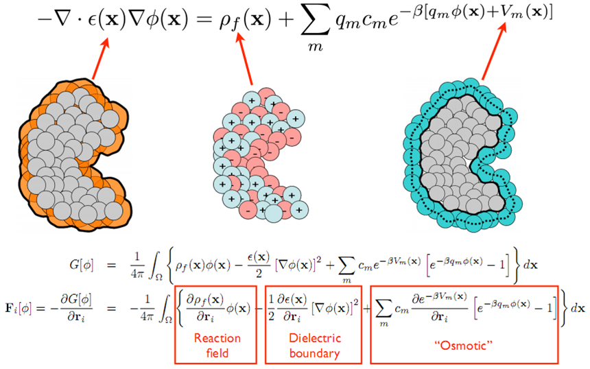

Solvation Models
Electrostatic and solvation models can be roughly divided into two classes ([Warshel2006], [Roux1999], [Ren2012]) explicit solvent models that treat the solvent in atomic detail and implicit solvent models that generally replace the explicit solvent with a dielectric continuum.
Each method has its strengths and weaknesses.
While explicit solvent models offer some of the highest levels of detail, they generally require extensive sampling to converge properties of interest.
On the other hand, implicit solvent models trade detail and some accuracy for the “pre-equilibration” of solvent degrees of freedom and elimination of sampling for these degrees of freedom. Implicit solvent methods are popular for a variety of biomedical research problems.
The polar solvation energy is generally associated with a difference in charging free energies in vacuum and solvent.
A variety of implicit solvent models are available to biomedical researchers to describe polar solvation; however, the most widely-used methods are currently the Generalized Born (GB) and Poisson-Boltzmann (PB) models.
GB and related methods are very fast heuristic models for estimating the polar solvation energies of biomolecular structures and therefore are often used in high-throughput applications such as molecular dynamics simulations.
PB methods can be formally derived from more detailed theories and offer a somewhat slower, but often more accurate, method for evaluating polar solvation properties and often serve as the basis for parameterization and testing of GB methods.
Finally, unlike most GB methods, PB models provide a global solution for the electrostatic potential and field within and around a biomolecule, therefore making them uniquely suited to visualization and other structural analyses, diffusion simulations, and a number of other methods which require global electrostatic properties.
The PB equation ([Fogolari2002], [Lamm2003], [Grochowski2007], [Baker2005]) is a nonlinear elliptic partial differential equation of the form shown in the figure below which is solved for the electrostatic potential.
The coefficients of this equation are directly related to the molecular structure of the system under consideration.
PB theory is approximate and, as a result, has several well-known limitations which can affect its accuracy ([Grochowski2007], [Netz2000]), particularly for strongly charged systems or high salt concentrations.
However, despite these limitations, PB methods are still very important for biomolecular structural analysis, modeling, and simulation.
Furthermore, these limitations are currently being addressed through new implicit solvent models and hybrid treatments which extend the applicability of PB theory while preserving some of its computational efficiency.
There are currently examples of both types of treatments which leverage APBS ([Azuara2006], [Chu2007], [Vitalis2004]).

PB methods provide polar solvation energies and therefore must be complemented by non-polar solvation models to provide a complete view of biomolecular solvent-solute interactions. non-polar solvation is generally associated with the insertion of the uncharged solute into solvent. There are many non-polar solvation models available; however, work by Levy et al. [Levy2003] as well as our own research [Wagoner2006] has demonstrated the importance of non-polar implicit solvent models which include treatment of attractive solute-solvent dispersion terms.
This model has been implemented in APBS and can also be easily transformed into simpler popular non-polar models (e.g., solvent-accessible surface area).
While this model can be used separately from PB to analyze non-polar contributions to solvation energy, its preferred use is coupled to the PB equation through a geometric flow model [Chen2010] which treats polar and non-polar interactions in the same framework and reduces the number of user-specified empirical parameters.